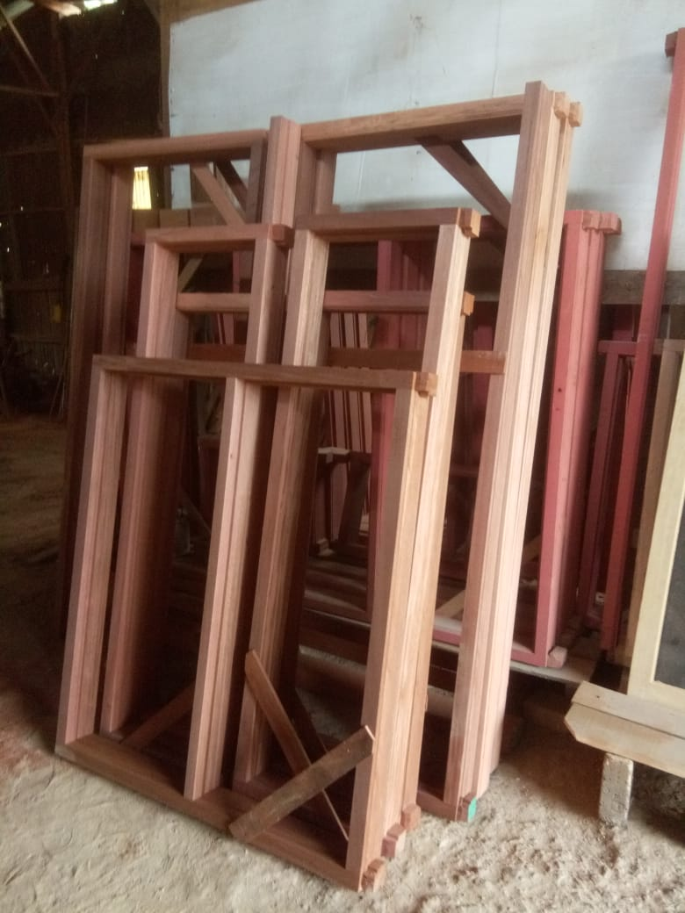
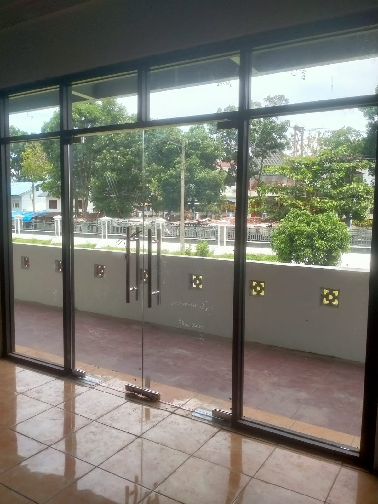
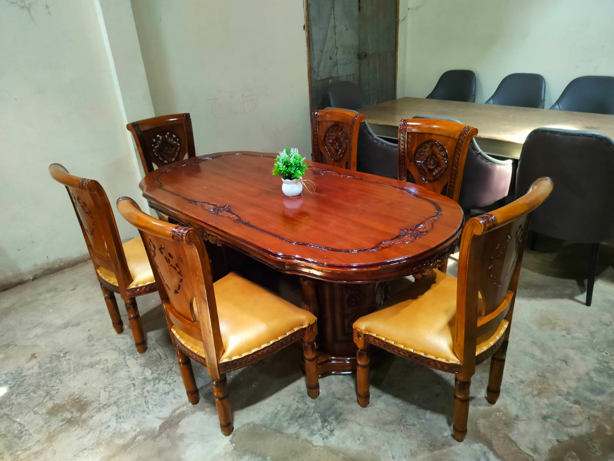
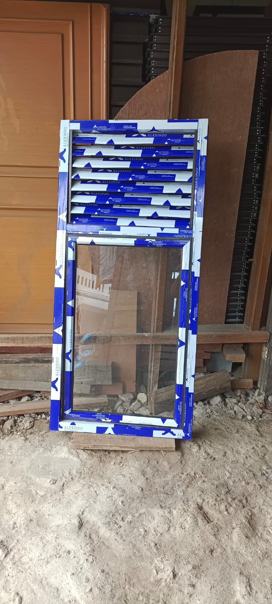
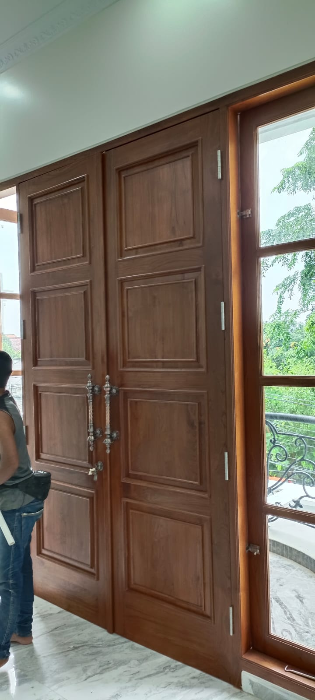
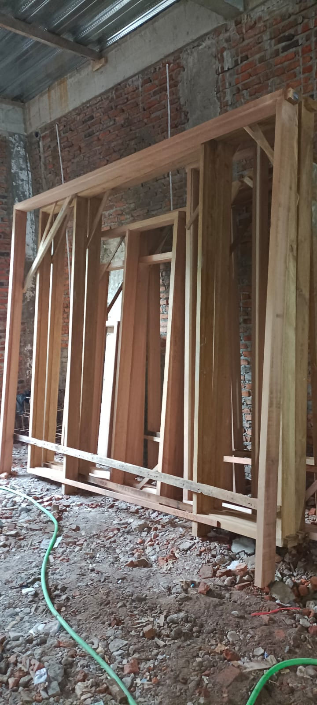

01
Kusen Kayu & Pintu Solid
Kusen kayu pilihan dan pintu solid dengan konstruksi kuat untuk rumah klasik maupun minimalis modern.
Untuk rumah tinggal, kantor, ruko, hingga proyek interior. AB Jaya menangani desain, produksi, dan pemasangan dengan pengerjaan presisi dan material pilihan.
10+
Tahun pengalaman produksi & pemasangan
Custom
Ukuran, model, finishing, dan kebutuhan proyek
7 Hari
Layanan konsultasi setiap hari, cepat respons

Spesialis
Kayu solid, kitchen set, pintu custom, partisi, jendela & pintu aluminium.
✓ Material kayu pilihan & aluminium premium
✓ Survey & estimasi gratis
✓ Produksi rapi dengan finishing halus
✓ Cocok untuk rumah, kantor, dan proyek custom
Layanan unggulan
Kusen kayu pilihan dan pintu solid dengan konstruksi kuat untuk rumah klasik maupun minimalis modern.
Layout menyesuaikan ruang dapur, storage lebih rapi, tampilan lebih modern, dan finishing bisa disesuaikan.
Partisi ruangan, meja kerja, lemari, serta kebutuhan furnitur kayu custom untuk hunian dan area kerja.
Solusi aluminium siap pasang untuk pintu, jendela, partisi, dan bukaan modern yang tampak bersih dan terang.
Preview proyek

Konsep dapur rapi, storage maksimal, dan finishing modern untuk rumah keluarga.

Memberi kesan luas, terang, dan lebih minimalis untuk area dalam maupun luar ruangan.

Nuansa hangat dari kayu solid dengan detail pengerjaan yang lebih clean dan elegan.

Profil modern dengan fungsi pencahayaan maksimal dan perawatan yang lebih praktis.

Tampilan natural yang mewah, kokoh, dan cocok untuk fasad maupun interior rumah.

Model kusen yang memberi karakter alami dan memperkuat tampilan fasad hunian.
Kenapa AB Jaya
Kami fokus pada kombinasi kekuatan struktur, ketelitian produksi, dan tampilan akhir yang enak dilihat. Cocok untuk klien yang ingin hasil tahan lama tanpa terlihat ketinggalan zaman.
Material Pilihan
Kayu kering pilihan dan aluminium premium untuk daya tahan dan hasil lebih stabil.
Custom Sesuai Ruang
Ukuran, model, dan finishing bisa menyesuaikan kebutuhan rumah, kantor, atau proyek komersial.
Pengerjaan Presisi
Finishing lebih halus, sambungan rapi, dan detail lebih terkontrol.
Harga Tetap Masuk Akal
Solusi yang seimbang antara kualitas hasil, fungsi, dan budget proyek.
Testimoni
“Pengerjaannya rapi dan cepat. Kitchen set saya jadi kelihatan lebih mewah dan proper.”
“Kusen kayunya kuat, finishing-nya juga bersih. Hasil akhir sesuai ekspektasi.”
“Komunikasinya enak dan solusi desainnya ngebantu banget waktu renovasi rumah.”
Konsultasi gratis
Workshop
RT.002/RW.004, Pakojan, Kec. Pinang, Kota Tangerang, Banten 15142
Jam Operasional
Senin – Minggu, 07.00 – 21.00
Telepon / WhatsApp
+62 858-1372-3007
+62 813-8503-4828
anmalbarokahjaya@gmail.com
Highlight